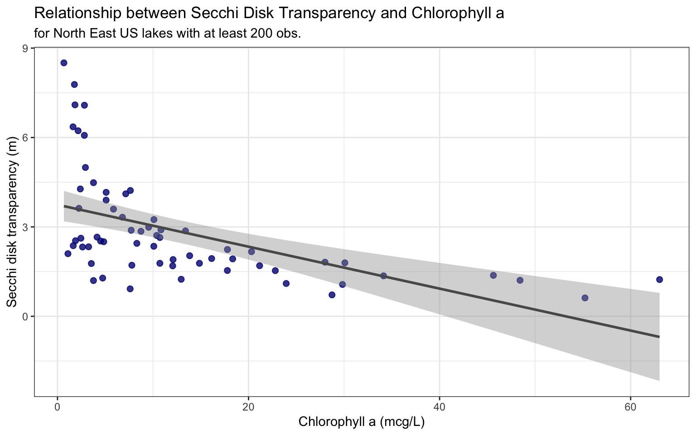
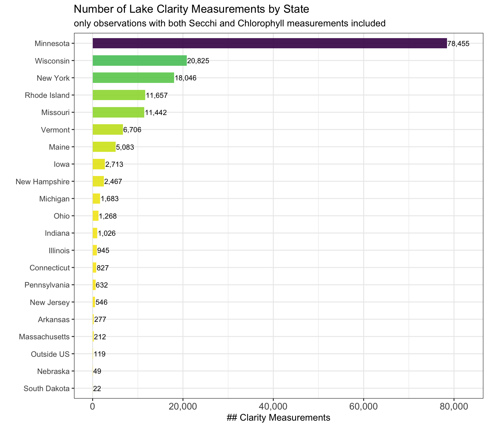
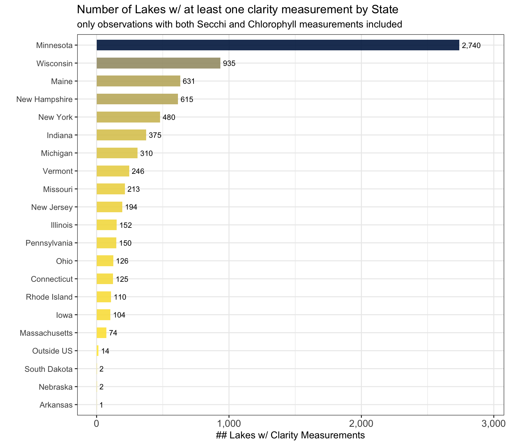

16 Assignment
16.1 Question 1)
What is the correlation between Secchi Disk Depth and Chlorophyll a for sites with at least 200 observations?
- Here, I just want a plot of chla vs secchi for all sites
# using the mean_values_200 dataset explore relationship of chla and secchi
ggplot(mean_values_200, aes(x = mean_chl, y = mean_secchi)) +
geom_point(alpha=0.8, color = "navy", size = 2) +
geom_smooth(method = 'lm', color = "grey35") +
labs(
title = "Relationship between Secchi Disk Transparency and Chlorophyll a"
, subtitle = "for North East US lakes with at least 200 obs."
) +
xlab("Chlorophyll a (mcg/L)") +
ylab("Secchi disk transparency (m)") +
theme_bw() +
theme(
legend.position="none"
)
# Simple linear model Chlorophyll a (mcg per L) on Secchi disk transparency (m)
lm_secchi_chla <- lm(mean_secchi ~ mean_chl, data = mean_values_200)
# explore model results
# names(summary(lm_secchi_chla))
# summary(lm_secchi_chla)
# summary(lm_secchi_chla)$coefficients["mean_chl", "Estimate"]
# summary(lm_secchi_chla)$adj.r.squaredThe relationship between Secchi disk transparency (m) and Chlorophyll a (mcg/L) in the lakes included in this analysis is negative. As Chlorophyll a concentration increases, the depth at which a Secchi disk can be seen decreases. Based on a simple linear regression for every one unit increase in Chlorophyll a (mcg/L), the Secchi disk transparency changes by -0.07m. The variation in Chlorophyll a explains 27% of the variation in Secchi disk transparency for lakes included in this analysis.
16.1.1 1a)
Why might this be the case?
A Secchi disk is a black and white disk that is lowered by hand into the water to the depth at which it vanishes from sight; the distance to vanishing is then recorded (US Environmental Protection Agency). The clearer the water, the greater the distance. Chlorophyll a is the predominant type of chlorophyll found in green plants and algae (US Environmental Protection Agency). The higher the concentration of plants and algae in a lake, the lower the sub-surface visibility.

Blue-green algae bloom on the shore of Catawba Island, Ohio, in Lake Erie, summer 2009. Photo: NOAA.
16.2 Question 2)
What states have the most data?
16.2.1 2a)
First you will need to make a lagos spatial dataset that has the total number of counts per site.
# using the epi_nutr dataset filtered for observations that have
# non-null values in both chla and secchi columns ...
# row is unique by lagoslakeid and sampledate
#check how row is unique
# nrow(chla_secchi)
# chla_secchi %>% distinct(lagoslakeid) %>% nrow(.)
# chla_secchi %>% distinct(lagoslakeid, sampledate) %>% nrow(.)
# summarize data by lake
lake_clarity <- chla_secchi %>%
group_by(lagoslakeid) %>%
summarize(
mean_chl = mean(chla, na.rm=T)
, mean_secchi=mean(secchi, na.rm=T)
, count_obs = n()
, first_date = min(sampledate)
, last_date = max(sampledate)
)
#count
# nrow(lake_clarity)16.2.2 2b)
Second, you will need to join this point dataset to the us_boundaries data.
# make lake clarity data created above spatial
spatial_lake_clarity <- spatial_lakes %>%
inner_join(lake_clarity, by = c("lagoslakeid")) %>%
st_transform(2163) # EPSG:2163 = US National Atlas Equal Area
#count
# nrow(spatial_lake_clarity)
# load in us states polygons
states <- us_states() %>%
st_transform(2163) # EPSG:2163 = US National Atlas Equal Area
# spatial join points to polygons
spatial_lake_clarity <- st_join(spatial_lake_clarity, states, left = TRUE)
# note, there are lakes for which there are clarity measurements but the
# point location falls outside of the borders of the US polygons
# see map
# mapview(spatial_lake_clarity %>% filter(is.na(statefp)))
# rename state if outside US border
spatial_lake_clarity <- spatial_lake_clarity %>%
mutate(state_name = ifelse(is.na(state_name), "Outside US", state_name))16.2.3 2c)
Then you will want to group by state and sum all the observations in that state and arrange that data from most to least total observations per state.
# summarize lake clarity data to state level
state_lake_clarity <- spatial_lake_clarity %>%
group_by(statefp, state_name) %>%
summarise(
count_lakes_w_data = n()
, count_clarity_measurements = sum(count_obs, na.rm = TRUE)
, mean_clarity_measurements = mean(count_obs, na.rm = TRUE)
, first_date = min(first_date)
, last_date = max(last_date)
, mean_chl_wgt_area = weighted.mean(mean_chl, w = lake_area_ha, na.rm = TRUE)
, mean_secchi_wgt_area = weighted.mean(mean_secchi, w = lake_area_ha, na.rm = TRUE)
) %>%
arrange(-count_clarity_measurements)
# plot data
ggplot(state_lake_clarity, aes(x=count_clarity_measurements, y = reorder(state_name, count_clarity_measurements), fill = count_clarity_measurements)) +
geom_col(alpha=0.9, width = 0.6) +
geom_text(aes(label = scales::comma(count_clarity_measurements, accuracy = 1)), colour = "black", angle = 0, size = 3, hjust = "left", nudge_x = 100) +
scale_x_continuous(labels = label_comma(), limits = c(0, max(state_lake_clarity$count_clarity_measurements)*1.05) ) +
labs(
title = "Number of Lake Clarity Measurements by State"
, subtitle = "only observations with both Secchi and Chlorophyll measurements included"
) +
ylab("") +
xlab("# Clarity Measurements") +
scale_fill_viridis(option = "viridis", direction = -1) +
theme_bw() +
theme(
legend.position="none"
, axis.text.y = element_text(size = 9)
, axis.text.x = element_text(size = 11, angle = 0)
)
Using the epi_nutr dataset filtered for observations that have non-null values in both the chla and secchi column, Minnesota is the state with the most lake clarity measurements with 78,455 observations covering 2,740 lakes.
16.2.4 2c) Bonus
Count the unique lakes in each state with at least one clarity measurment
# plot # lakes with clarity data
ggplot(state_lake_clarity, aes(x=count_lakes_w_data, y = reorder(state_name, count_lakes_w_data), fill = count_lakes_w_data)) +
geom_col(alpha=0.9, width = 0.6) +
geom_text(aes(label = comma(count_lakes_w_data, accuracy = 1)), colour = "black", angle = 0, size = 3, hjust = "left", nudge_x = 20) +
scale_x_continuous(labels = label_comma(), limits = c(0, max(state_lake_clarity$count_lakes_w_data)*1.07) ) +
labs(
title = "Number of Lakes w/ at least one clarity measurement by State"
, subtitle = "only observations with both Secchi and Chlorophyll measurements included"
) +
ylab("") +
xlab("# Lakes w/ Clarity Measurements") +
scale_fill_viridis(option = "cividis", direction = -1) +
theme_bw() +
theme(
legend.position="none"
, axis.text.y = element_text(size = 9)
, axis.text.x = element_text(size = 11, angle = 0)
)
16.3 Question 3)
Is there a spatial pattern in Secchi disk depth for lakes with at least 200 observations?
mapviewOptions(legend.pos = "bottomright", homebutton.pos = "bottomleft")
# using the same dataset used to map chlorophyll a measurements
mapview(mean_spatial
, zcol = "mean_secchi"
, cex = "mean_secchi"
, alpha.regions = 0.5
, map.types = "OpenStreetMap"
, label = c("gnis_name")
, col.regions = mako(n = 6, direction = -1)
, at = seq(0, 10, 2)
, legend = TRUE
, layer.name = "Secchi disk transparency (m)"
, popup = popupTable(
mean_spatial
, zcol = c(
"gnis_name"
, "mean_secchi"
, "mean_chl"
)
, row.numbers = FALSE
, feature.id = FALSE
)
)Yes, there appears to be a spatial pattern in Secchi disk transparency (m) for lakes with at least 200 observations. Based on the map above, lakes in the eastern states (e.g. New York, New Hampshire) generally have visibility of the Secchi disk at a deeper level than lakes in the western states (e.g. Minnesota, Missouri).